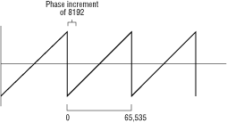

An instrument's knobs control its operating attributes such as frequency, mix, amplitude, and timbre. One instrument's output can control a knob's value. A knob can also be grabbed, a process that connects a task to a knob so the task can tweak the knob (set the knob to a specified value).
A knob's setting can be changed dynamically while the instrument plays a note, which can change the sound of the note during playback, or a knob's setting can be changed statically, that is, tweaked before note playback to set a value that affects the overall sound of the note. If you plan to set a knob dynamically, the task can do so directly, or you can connect an instrument such as envelope.dsp to the knob. The instrument can smoothly change the knob using the preset values stored in the envelope points. If you simply need to set a static knob value, then you can have your task grab the knob and tweak it.
Finding Knobs
To specify an instrument's knob, you must first know the knob's name.
The easiest way to do that is to look up the instrument in
Instrument Templates, of the 3DO Music and Audio Programmer's Reference, which lists the names for each of an instrument's knobs. You can also use two Audio folio calls to find out more about an instrument's knobs. To use the calls on an instrument, you must first create the instrument.
Finding the Number of Knobs
To find the number of knobs an instrument has, use this call:
int32 GetNumKnobs( Item Instrument )
The call accepts the item number of the instrument you want to check. When it executes, it returns the number of knobs the instrument has if successful, or a negative number (an error code) if unsuccessful. It is possible for an instrument to have no knobs, in which case GetNumKnobs() returns 0.
Finding a Knob's Name
Once you know how many knobs an instrument has, you can ask for the name of any of those knobs using this call:
The call accepts the item number of the instrument, followed by an index to the knob. (The first knob is index 0, the second knob index 1, and so on.) When it executes, the call returns a pointer to a string containing the name of the knob if successful. It returns NULL if unsuccessful.
Grabbing a Knob
Before a task can tweak an instrument's knob, it must first grab that knob using this call:
Item GrabKnob( Item InstrumentItem, char *Name )
The call accepts the item number of the instrument followed by a pointer to a string containing the name of the knob the task wants to grab. If successful, GrabKnob() creates a knob item connecting the knob and the task, and returns its item number. If unsuccessful, it returns a negative value (an error code).
Finding Knob Parameters
Once you've grabbed a knob, you can use its item number to find
the parameters of the knob with the GetAudioItem() call.
It accepts the knob tag arguments listed in Table 1.
Table 1: Knob tag arguments.
--------------------------------------------------------
Tag Name |Description
--------------------------------------------------------
AF_TAG_CURRENT |Returns current raw value.
--------------------------------------------------------
AF_TAG_MIN |The minimum setting of the knob.
--------------------------------------------------------
AF_TAG_MAX |The maximum setting of the knob.
--------------------------------------------------------
AF_TAG_DEFAULT |The default setting of the knob.
--------------------------------------------------------
AF_TAG_NAME |The name of the knob.
--------------------------------------------------------
Tweaking a Knob
Once a task has grabbed a knob, it can tweak the knob to a new setting using this call:
Err TweakKnob( Item KnobItem, int32 Value )
The call accepts the item number of the knob connection to tweak followed by a 32-bit signed integer value to which to tweak the knob. When executed, TweakKnob() sets the knob to a specified value, clipping the value if it is too high or too low for the knob. The call returns 0 if successful, or a negative value (an error code) if unsuccessful.
The types and ranges of values accepted by an instrument's knobs
are listed under the instrument's description in
Instrument Templates, in the 3DO Music and Audio Programmer's Reference. Frequency values are usually a 16.16 value specifying Hertz (cycles per seconds); amplitude values are usually a value from 0 (silence) to 0x7FFF (full loudness).
Tweaking a Knob to a Raw Value
When TweakKnob() sets a new knob setting, it accepts the setting value in convenient units such as Hz for frequency. It then converts that setting into a value that the knob can actually use, a raw value. In the case of a knob that controls frequency, the knob's raw value is measured in phase increments.
Sound-Synthesis Instruments
For a sound synthesis instrument, such as a sawtooth wave generator, its frequency knob takes raw values measured in phase increments. A phase increment is the amount of phase increase in the waveform during one sample frame. To understand phase increments, consider that a sound synthesis instrument generates a repeating waveform (as shown in Figure 5). A single occurrence of the waveform is measured from 0 at the beginning of the waveform to 65,535 at the end of the waveform, just before it repeats. (In traditional sound synthesis, this interval is usually measured from 0 to 360 degrees, but computers use powers of two.)

Figure 1: Measuring a repeating waveform
A waveform played back at a few units per frame has a lower frequency than the same waveform played back at many units per frame. In other words, the larger the phase increment, the higher the frequency of playback.
The following formula derives frequency from phase increment:
Frequency = (Sample Rate * Phase Increment)/65536
And this formula derives phase increment from frequency:
Phase Increment = (Frequency * 65536)/Sample Rate
Sampled-Sound Instruments
Raw values for a sampled sound instrument work differently. A setting of 0x8000 plays an attached sample back at one sample per frame. Doubling that value doubles the frequency (raising it an octave); halving the value halves the frequency (lowering it an octave). The range for phase increments is 0 to 0xFFFF, so you can raise a sample by almost a full octave or drop it so many octaves that it is no longer within the audible frequency range. To play a sample at 22,050 Hertz, use 0x4000. For 11,025 Hertz, use 0x2000. Note that this only works for variable rate instruments such as varmono16.dsp.
If you want to tweak a knob with a raw value instead of a convenience value such as frequency in Hertz, use this call:
Err TweakRawKnob( Item Knob, int32 Value )
The call accepts the item number of the knob connection to tweak followed by a 32-bit signed integer value that is the raw value you want to set. When TweakRawKnob() executes, it sets the knob to the raw value setting, and returns
0 if successful. If unsuccessful, it returns a negative value (an error code).
Every time you call TweakKnob(), it converts the value it receives into raw units and then calls TweakRawKnob(). By using TweakRawKnob() instead of TweakKnob(), you save one simple operation, not a major consideration for casual tweaking here and there, but something to consider if you are using streams of tweaking commands.
Releasing a Knob
Once a task is finished tweaking a knob, it should release the knob so that the knob can be used for an instrument connection or another task grab. To do so, use this call:
Err ReleaseKnob( Item KnobItem )
The call accepts the item number of the knob to be released. When executed, it deletes the knob item connecting the knob and the task and returns 0 if successful. If unsuccessful, it returns a negative value (an error code).